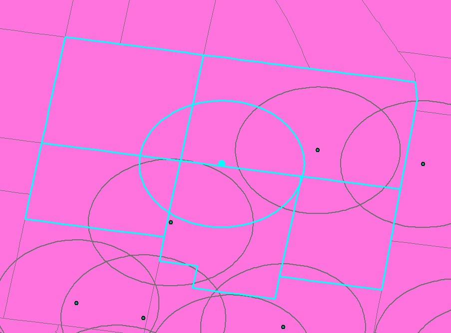
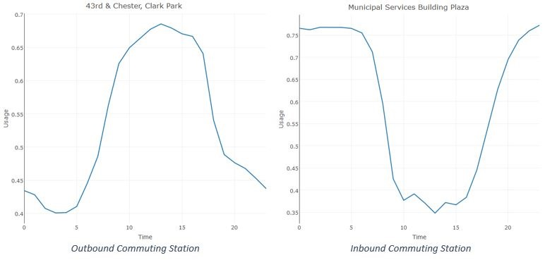
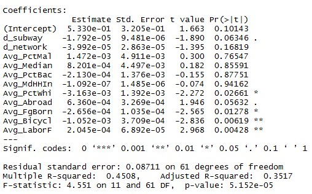
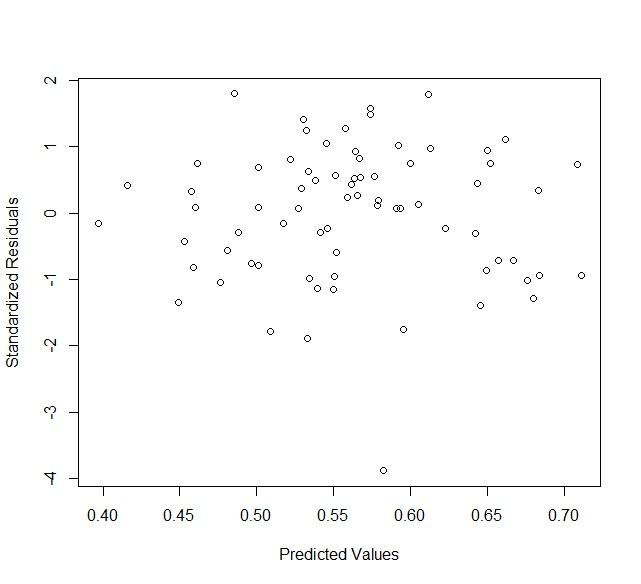
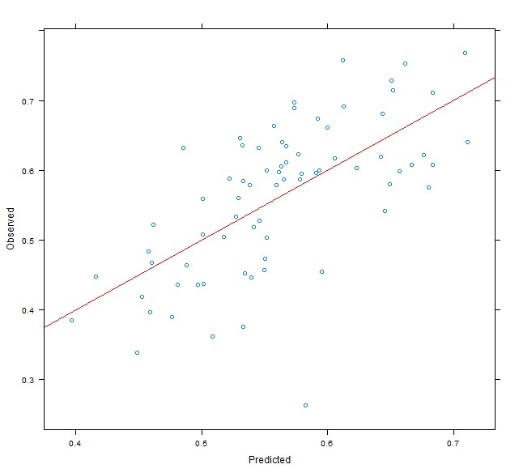
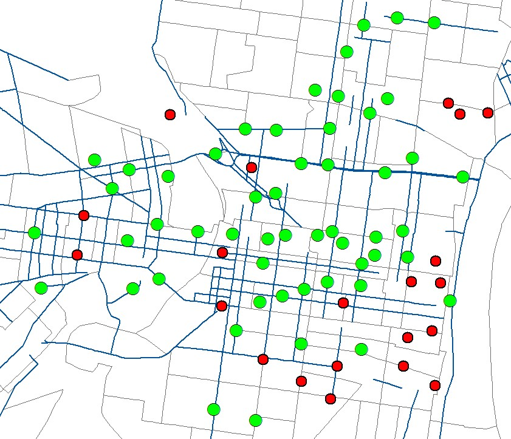

The Demand for Transportation May 31, 2016 by Yi Xu
Introduction
Indego is a public bicycle sharing system that serves parts of Philadelphia. The purpose of this project is to develop a prediction model that estimates the demand for Indego by geography. The model helps the Indego bikeshare service by predicting the average usage of each bike-share station in a specific time period. In addition, the relationship between bike-share and time is also analyzed to help predict when a particular bike-share station will require service. Several factors (e.g., distance to subway stations, percentage of white, labor force) were found to be significantly related to the usage of Indego bike-share in Philadelphia. Peak hour affects bike-share according to the analysis which leads to the finding of daily commuting patterns of Indego bike-share stations. The prediction fit well in both in-sample prediction and out-of-sample prediction. These findings will help understand the demand for bike-share in Philadelphia and improve the bike-share system including deciding where to expand the bike-share service.
Data
The usage of an Indego bike-share station is measured by the ratio of available docks to total docks. There is an API on opendataphilly.org helping get data including Indego bike-share station locations and the number of available bikes.
Randal Olson, a postdoctoral researcher at the University of Pennsylvania Institute for Biomedical Informatics, is using this API to get data from the website of Indego. In this project, data about the usage of the Indego bike-share stations in October, 2015 was from Randal’s data shared in the Penn GIS Day Data Viz Workshop.
The demographics is derived from American Community Survey (ACS) 2010. Some demographic characteristics were extracted out and merged to the Indego data. The distance to transit stops and bike network were calculated in ArcMap. Note that a quarter mile buffer was created for each Indego bike-share station. The census tracts which intersect with the buffer were taken into consideration when calculating the demographic characteristics related to the station. the average value of the demographic information of census tracts which intersect with this buffer was calculated as the value of the demographic information of the highlighted area. This highlighted area can be regarded as the service area of a specific bike-share station.
| Variables | Definition |
|---|---|
| Usage | The average usage of each Indego bike share station in October. |
| Dist. Bike Lane | The distance to bike-friendly street. |
| Dist. Subway | The distance to subway stations. |
| Avg. %Male | The average percent of male in census tracts which intersect with the quarter mile buffer of each Indego bike share station. |
| Avg. Median Age | The average percent of male in census tracts which intersect with the quarter mile buffer of each Indego bike share station. |
| Avg. %White | The average percent of White in census tracts which intersect the quarter mile buffer of each Indego bike share station. |
| Avg. Abroad | The average number of individuals who were born abroad of at least one U.S. citizen parent in census tracts which intersect with the quarter mile buffer of each Indego bike share station. |
| Avg. Foreign Born | The average number of individuals who are not U.S. citizens at birth in census tracts which intersect with the quarter mile buffer of each Indego bike share station. |
| Avg. %Bachelor | The average percent of individuals with Bachelor’s degrees or higher in census tracts which intersect with the quarter mile buffer of each Indego bike share station. |
| Avg. Bicycles | The average number of bicycles in households in census tracts which intersect with the quarter mile buffer of each Indego bike share station. |
| Avg. Labor Force | The average number of labor forces in census tracts which intersect with the quarter mile buffer of each Indego bike share station. |
| Avg. MedHHInc | The average median household income in census tracts which intersect with the quarter mile buffer of each Indego bike share station. |
The cut value is set to be 0.8 which means if the correlation between two different predictors is larger than 0.8, there is multicollinearity. The goal is to avoid multicollinearity so predictors which are related to others would be removed if they are less significant.
Peak Hour
The relationship between time and bike-share stations usage is examined. Plots rather than regression models are used to reveal the relationship. They are going to show if peak hour affects travel demand as Robert Cervero stated in his article: Alternative Approaches to Modeling the Travel-Demand Impacts of Smart Growth. Randal proposed an idea about daily usage patterns of Indego bike-share stations. He defined two different kinds of stations according to their daily usage patterns. One is outbound commuting stations and the other is inbound commuting stations. Outbound commuting stations are stations where people take a bike from home to ride to work or school while inbound commuting stations are stations where people take a bike from work or school to ride back home (Olson, 2015).
When people start from home in the morning, the usage of bike stations in residential areas increases. It reaches peak in the noon because at that time most people have left home to work. It falls down as the time passes because more and more people go back home and put the bikes back to the docks. On the other hand, the usage patterns of stations in commercial areas are the opposite. It can be inferred that time will not be a significant predictor when predicting the demand for different bike-share stations because different bike-share stations have different usage-time patterns. However, time may be a useful predictor when predicting the demand for one single bike-share stations at a specific time or in a short time period.
Although the main goal of this project is to develop a model predicting the demand for bike-share stations by geography, the analysis to peak hour is essential. It is intuitively irrefutable that time affects the usage of bikes. Necessary analysis to time can help better understand why some of the socioeconomic and demographic characteristics are related to the demand for bike trips.
Regression Results
First, all the latent variables were included in the regression. Based on the significance, distance to bike-friendly street, average percent of male, average median age, average percent of individuals with Bachelor’s degree or higher and average median household income are out. It is a little bit surprising that they are out because they were supposed to affect the usage of bikes according to some previous research.
It seems that individuals who were born abroad of at least one U.S. citizen parent have more demand for bike-share. White people along with individuals who are not U.S. citizens at birth and individuals who have their own bikes have less demand for bike-share. The number of labor force positively related to the demand for bike-share which suggests that the main trip purpose for renting bikes is work commute. The results of the analysis to temporal usage of a specific bike-share station shown in previous chapter support that statement. There is significant difference between peak hour and other time period.
About 40% of the variance in the dependent variable is explained by the model. It is not a high value but the robustness of the model is not determined by r-squared value alone.
The rotation was set to 10 times. Compared to the results of the original test on the whole training set, the results of cross-validation is the same. The model is attractively robust in itself.
Here is the plot of standard residuals as a function of predicted values. Although the residuals are not technically random, there are not clear patterns of them. It shows slight heteroscedasticity, but overall, does not show strong bias. The prediction is quite acceptable. There is only one obvious outlier. The assumption of homoscedasticity is not violated.
The prediction model was applied to a new data set which are data about the usage of Indego bike-share stations in the first week in November, 2015. Here is the plot of observed values as a function of predicted values shows the fit of out of sample prediction.
The perfect fit pattern is that all points fall exactly on the line. Note that the slope of the line is 1 which means the predicted value is equal to the observed value. The result is consistent with previous findings. Since the residuals are approximately randomly distributed, there is not a particular area where the model perform the worst. The model can explain 40% of the variance in the dependent variable. Therefore, there are a lot of points respectively far away from the line.
Conclusion
In this project, data about the usage of Indego bike-share stations in Philadelphia were gathered and filtered by time. The data from October 1st to October 31st are used as training set. The data from November 1st to November 7th are used as testing set. To build a prediction model just by geography, time is eliminated by calculating the average usage in a specific time period which is one month for the training set and 7 days for the testing set. The average usage of any Indego bike-share station is regarded as the demand for that station. Several possible predictors are chosen according to some previous work on the demand for bike-share. The correlations between these predictors and the demand for Indego bike stations are tested.
The predictors which are eliminated are distance to bike-friendly street, average percent of male, average median age, average percent of individuals with Bachelor’s degree or higher and average median household income. This is the difference across the literature. The reason why the distance to bike-friendly street is not significant is probably that the bike-friendly streets are within the walking distance to the bike-share stations according to the map of bike lane network. Bike commuters do not find it hard to walk their bikes to a bike lane. The median household income is not related to the demand for bike-share stations. This finding is actually consistent with the findings in the literature. Pucher et al. found that people from households with different income did not vary on the preference to bike. Although rich people made more bike trips, the difference was quite slight. The findings which are a little bit hard to explain and may need further research are that male and young people do not necessarily have more demand for bike-share stations. There are a lot of possible reasons to explain that. To avoid stretching the analysis, the possible reasons will not be discussed here.
The predictors which are kept are the distance to subway stations, the average percent of white, the average number of individuals who were born abroad of at least one U.S. citizen parent, the average number of individuals who are not U.S. citizens at birth, the average number of bicycles in households and the average number of labor forces. Some of the predictors are mentioned to be related to the demand for bike-share stations in the literature. The average number of individuals who were born abroad of at least one U.S. citizen parent and the average number of individuals who are not U.S. citizens at birth are two predictors which are not found in the literature but in American Community Survey data. It seems that individuals who are influenced by travel patterns outside the U.S. have more demand for bike-share.
Suggestions for Indego
Try to make bike lanes closer to the bike-share stations. Although the distance to bike-friendly street is not a significant predictor to the demand for bike-share station, the majority of the underused bike-share stations (usage below 50%) are farther away from the bike lanes. Distance is probably a reason that they are underused. In the figure below, the red dots are underused bike-share stations.
Try to work closely with public transit system (SEPTA). As is stated before, the distance to subway stations are closely related to the demand for bike-share. This means people may take bikes to subway stations or take bikes from subway stations to their destinations. Indego bike-share system is a new system. Its service has not yet been connected to subway service. One of the possible cooperation is the discount on prices. So far, there are three plans for Indego bike-share. One is “Indego30”. It is $15 per 30 days but includes an unlimited number for one hour rides. One is “IndegoFlex” with $10 annual membership fee. Then it is $4 per trip up to one hour and $4 per hour after the first hour. The last one is “WalkUp”. It is $4 per 30 minutes. It seems that Indego bike-share system differentiates the prices for local and tourists. However, there is no cooperation on price between Indego bike-share stations and subway stations. My suggestion is that if an individual is riding an Indego bike, he/she can get a discount on the fare for subway. The cooperation on prices may stimulate the usage of both Indego bike-share and subway.